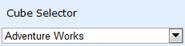

Definition
Cube selector lets the user to browse and select a cube from the entire collection, which has been populated by the data source.
Changing the cube
On cube change the following elements refresh according to the new cube.
Table 8: Components
|
Component |
Description |
|
Report List |
Maintains a collection of reports. |
|
Axis Element Builder |
Collection of axes namely categorical, series and slicer. |
|
Elements Editor |
The Tree-view control that displays the member element of the current dimension as well as holds a collection of measures. |
|
Cube Dimension Browser |
The Tree-View structure that comprises the dimension and measure belonging to current cube into independent logical groups. |
|
Chart |
A chart is a graphical representation of data, in which the data is represented by symbols, such as bars in bar chart, lines in line chart, or slices in pie chart. |
|
Grid |
A grid is a tabular representation of data, arranged in the form of rows and columns, categorized accordingly. |

Figure 15: Cube Selector